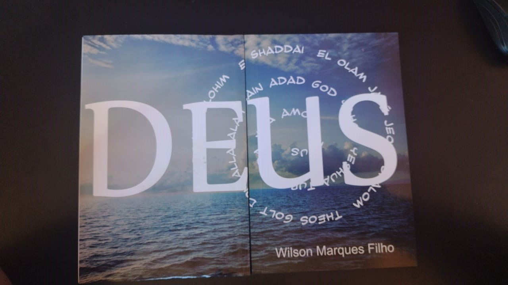

O livro Deus retrata o campo religioso. É uma obra subversiva porque não apresenta o que o campo determina.
Dentro do campo religião a diversidade é intensa sendo que a definição que podemos atribuir ao conceito consagrado, divergindo assim do profano por tautologia. Poderíamos atribuir no sincretismo, no viés em voga.
Não existe nesse campo uma disputa no sentido da palavra, mas, o entendimento do assunto se encontra hoje de um consenso adotando a ideia de uma forma contemporânea.